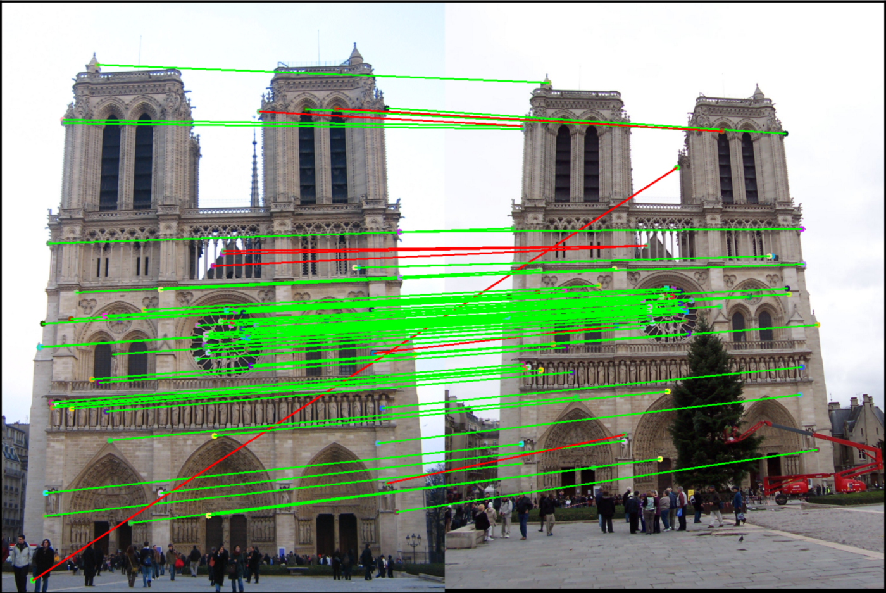

Computer Vision in short is the process of using AI or Deep-Learning to provide a computerized program "sight" in a more human sense of the word. This sense of sight is attained through multiple different types of Machine-Learning techniques that include but are not limited to Object Detection, Facial recognition, Edge Detection, Image Segmentation and Feature Matching. Using any combination of the different image-processing techniques, a computer is given the ability to describe very pertinent information contained in a photo or video, which can then be passed on to do a myriad of things.

Image segmentation is the most essential process for all AI photo recognition to function, either feature matching or Object Identification. Edge detection goes through an image pixel-by-pixel in clusters of about 9x9 and checks for the individual bit values of these pixels. In searching, the algorithm finds bit values of colors that differ drastically in color from the pixels surrounding it by multiplying these pixels bits by one of many different edge-detection transformation matrices. If a hard edge is found it classifies it as an edge and starts to create a composite image of the traced image. This process allows for only the most vital information about a picture to be simplified in terms of data and allows for point tracing such as feature matching or pattern recognition training in object identification. In the process of image segmentation, the edge finding algorithm is passed through an image multiple times, each time with an increasing amount of detail. The first run is done on a grey scaled photo will full "threshold" which is purely black and white with very little detail. Upon each run of edge finding, the number of colors and details are increased to smooth out the lines surrounding the objects in a photo. This process is instrumental to object identification as it allows to train the AI to focus on the right objects in a photo to learn the correct pattern recognition.
The process that predominately controls how facial AI facial recognition functions is feature matching. This system functions on the system of basic image processing systems such as edge detection as it is based primarily on "features" or something unique to a specific part of an image. Think of this as using a landmark on your trip to remember where something is. Using edge detection of sharp edges, points of dark and light, and sudden texture changes the AI maps out tens to thousands of these identifying "features". Once these features have been mapped out, each of the vector points is sent through an algorithm that translates each point into numerical data which acts as a fingerprint for the specified image. Once this image footprint is established, you can feed the feature matching or facial recognition algorithm any image for remote identification. A direct comparison of the fingerprint and the image is fed into the algorithm to find if it is the same. Because of how this fingerprint is created and used remotely removes the need for extensive AI training or databases of information. It is also because of these numerical values that there is enough flexibility built into the algorithm to allow for small variances in the 2 images returning a successful result. This is the technology used in most modern face scanners and fingerprint

.jpeg)
Object Detection is the most universally known process of Computer Vision as it is the product of many sci-fi dystopian fictions. This algorithm unlike the rest needs a considerable amount of human interaction to make it functional. Based upon the algorithms of edge detection and image segmentation, an object identification AI can be "trained" into pattern recognition. By feeding an algorithm thousands of photos of a selected target, and the incremental self-correcting method of machine learning, you can define what a "cat" may look like, what a "person" may look like, and so on. Where this process differs from feature matching or any other identification process is that there is little to no room for failure; it is either extremely right or extremely wrong. In order to "teach" an effective identification of a cat, you must introduce all the potential variations. Despite extensive training, an object identification AI can still be easily fooled to return the values of both a car and a truck due to their similarities and how the AI was trained to identify each target. If trained extensively though, Object Identification AI has the capability to identify objects obfuscated by long-distance or objects better than a human could.